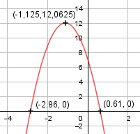

Aufgabe 8 f(x) = - 4x2 - 9x + 7 f'(x) = -8x - 9, f''(x) = -8, f'''(x) = 0 Definitionsbereich: -∞ < x < ∞ Wertebereich: -∞ < f(x) ≤ 12,0625 (siehe Extrempunkte) Asymptoten: - Symmetrie: - Nullstellen: -4x2 - 9x + 7 = 0 A, B, C - Formel: A = -4, B = -9, C = 7 x1,2 = x1,2 = x1,2 = 9 ± 13,9 x1,2= ---------- -8 x1 = -2,86 x1 = 0,61 N1(- 2,86|0), N2(0,61|0) Schnittpunkt mit der y-Achse: f(0) = - 4 * 02 -9 * 0 + 7 = 7 Sy(0|7) Extrempunkte: -8x - 9 = 0 | +9 -8x = 9 | :- 8 x = -1,125, f(-1,125) = -4*(-1,125)2-9*(-1,125)+7 = 12,0625 f''(x) = - 8 < 0 --> Hochpunkt(-1,125|12,0625) Alternativ: Scheitelpunktberechnung f(x) = -4x2 - 9x + 7 |:(-4) f(x) ---- = x2 + 2,25x - 1,75 - 4 f(x) ----- = (x + 1,125)2 -1,265625 - 1,75 |*(-4) -4 f(x) = -4 * (x + 1,125)2 + 12,0625 Wendepunkte: 10 = 0 --> Widerspruch, keine Wendepunkte Graph:
